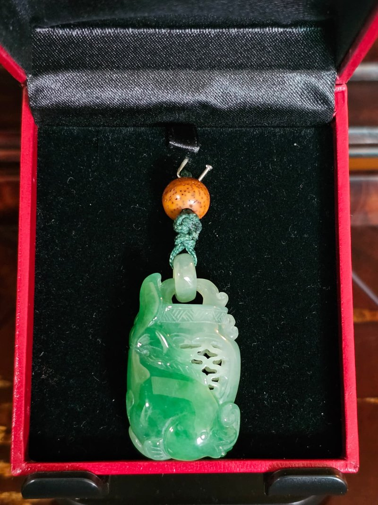
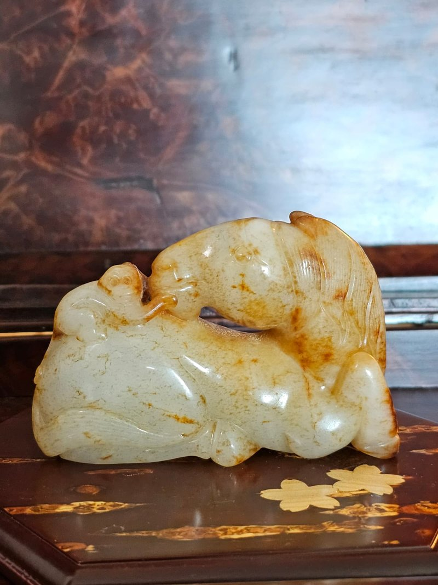

種質與色澤
此件平安扣選料精當，種質細膩且水頭（透明度）表現優異。色澤介於晴水與淡綠之間，分佈均勻不張揚，視覺感極其舒適。表面無明顯雜質，透光觀察可見細微的天然交織結構，展現翡翠的純淨感。
翡翠質地清潤，呈現淡淡的底色。平安扣造型規整，厚薄均勻，在光線下展現出良好的通透度與水感。
造型圓潤飽滿，象徵圓圓滿滿。表面拋光細緻，呈現出強烈的玻璃光澤，觸手溫涼滑膩，盡顯翡翠的靈動之美。
此件平安扣選料精當，種質細膩且水頭（透明度）表現優異。色澤介於晴水與淡綠之間，分佈均勻不張揚，視覺感極其舒適。表面無明顯雜質，透光觀察可見細微的天然交織結構，展現翡翠的純淨感。
採最經典的「平安扣」形制，外圓內圓的線條極其流暢。邊緣處理圓融，打磨工藝精湛，確保了佩戴時與皮膚接觸的舒適感，是簡約而不簡單的珠寶工藝體現。
Well-chosen material with fine grain and excellent translucency. Even, unshowy colour that is extremely comfortable to look at. No visible inclusions; in transmitted light a faint natural interlocking structure confirms the stone.
The most classic of forms, its outer and inner circles perfectly fluid. Edges are softened and the polish is masterful, so it sits comfortably against the skin — jewellery that is simple without being plain.
寓意 平安扣自古寓意「平平安安、圓圓滿滿」。其形似古錢，亦有「財源滾滾、八方來財」之意。因其不著一字、不雕一物，更體現了「大器隨心、化繁為簡」的生活哲學。
用途 重量輕巧（3.15g），尺寸適中，極適合製作成項鍊吊墜、手串隔珠或隨身平安掛飾，是男女老少皆宜的佩戴佳品。
The peace buckle has meant 平平安安 and 圓圓滿滿 since antiquity. Shaped like an old coin, it also suggests wealth arriving from every direction; unlettered and uncarved, it embodies a philosophy of paring things back.
Light at 3.15 g and modest in size — a pendant, a spacer in a bracelet, or a token carried close. Suitable for anyone, of any age.
品相 此為近代工藝佳作，整體保存近乎完美。翡翠特有的天然結構或極微小棉紋乃石料自然特徵，不影響整體藝術美感與佩戴價值。
承諾 本人曾從事珠寶行業，保證描述真實、誠信。誠摯歡迎預約親自鑑賞，感受這枚翡翠平安扣的溫潤水色。
Condition A fine modern piece, almost perfectly preserved. Natural jadeite structure or minute cottony traces are characteristics of the stone and do not affect its beauty or wearability.
Guarantee I spent my career in the jewellery trade and guarantee that every description is true and professional. You are sincerely welcome to arrange a private viewing.


